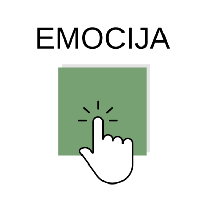

3D Emociju kompozīcija supervīzijā
3DEKS digitālā metode paredzēta darbam attālinātā supervīzijā, ar mērķi veicināt
emociju apzināšanos, to izpratni, pašrefleksiju un sniegt atbalstu.
Metode tiek veikta saskaņā
ar instrukciju un sekojot precīziem soļiem.
“3D emociju kompozīcija supervīzijā”
“3D emociju kompozīcija supervīzijā” (3DEKS ) ir vizuāla digitāla metode attālinātam darbam supervīzijā ar mērķi veicināt emociju apzināšanos, to izpratni un pašrefleksiju. Metode tiek veikta saskaņā ar instrukciju un sekojot precīziem soļiem speciāli izveidotā digitālā rīkā 3deks.rsu.lv.
Metode 3DEKS ir adaptēta vizuālās izvērtēšanas metode “3D emociju kompozīcija” (Vanadziņa, Lejstrauta, Paiča un Mārtinsone, 2020), kas sākotnēji paredzēta klienta emocionālās pieredzes un atsevišķu emociju regulācijas prasmju izvērtēšanai mākslas terapeitu praksē.
Lai noskaidrotu, vai 3DEKS metodi var izmantot supervīzijā, tika veikts pilotpētījums, izmantojot Vācijā izstrādātu sistēmiskās konsultēšanas rīku “Online-systembrett”. Metodes adaptācijas procesa pilotpētījumā tika iegūta pozitīva supervīzijas klientu atgriezeniskā saite un noskaidrots, kā šo metodi var izmantot supervīzijā. Ir definēts supevīzijas klientiem nepieciešamais — reflektēt par emocionālo pieredzi, distancēti analizēt vizuālo izkārtojumu, veikt īsu izglītojošo funkciju, normalizēt emocijas (nav “labu” vai “sliktu” emociju). Balstoties uz pētījuma rezultātiem, ir izveidots 3DEKS digitālais rīks.
3DEKS digitālais rīks palīdz ieraudzīt emocionālos procesus distancēti un iegūt jaunu perspektīvu. Tas ir svarīgs process, lai notiktu pieredzes integrācija un jaunas izpratnes rašanās.
Metodes process
- Tiek noskaidrota supervīzijas vajadzība un jautājums, kas saistīts ar profesionālo darbību. Supervīzijas jautājums vai gadījums var būt saistīts ar konkrētu situāciju vai arī profesionālo vidi kopumā.
- Tiek attēlotas astoņas dažādas emocijas, kuras ar kursora palīdzību jāizvieto digitālajā plaknē, ņemot vērā emociju intensitāti, kā tās piedzīvotas pieteiktajā gadījumā.
- Ja klients nevēlas turpināt metodi, jebkurā brīdī ir iespēja pārtraukt procesu.
Emociju nozīme
Emocijas ir notikumu tiešs piedzīvojums, kas ir saistīts ar domām, vajadzībām, un to
pārdzīvojuma pieredze ir ikvienam. Emocijas dod nozīmi, virzību mūsu dzīvēm, bet ne
vienmēr tās ir viegli piedzīvot vai ar tām sadzīvot.
Katrai emocijai ir sava nozīme, piemēram, pasargāt, aizstāvēt, izdzīvot, iekļaut, regulēt,
motivēt. Tās arī palīdz labāk izprast sevi un citus. Šeit atradīsi skaidrojumu astoņām
pamatemocijām - dusmām, bailēm, interesei, kaunam, vainai, priekam, riebumam un
skumjām, un to kādas svarīgas funkcijas katra pilda, ko nodrošina, kam ir noderīga, kādas
situācijas ierosina, kā arī to, kā tās sajūtam savā ķermenī.

Dusmas
DUSMU funkcija ir sagatavot ķermeni un prātu cīņai, signalizēt par robežu pārkāpšanu un ierastās kārtības izjaukšanu.
- Dod enerģiju un drosmi rīkoties, veicināt pārmaiņas, pretoties nepatīkamajam.
- Aizsargā arī no dziļākām, grūtāk izturamām emocijām, tādām kā vilšanās, skumjas, trauksme, izmisums, bailes.
Dusmas ierosina situācijas, kad:
- tiek pārkāptas robežas;
- tiek aizskarta pašapziņa;
- notiek netaisnība, izteikts apvainojums vai nodarīts pāridarījums;
- netiek apmierinātas vajadzības vai gaidas;
- tiek sajusts izsalkums vai sāpes.
Kā dusmas izpaužas ķermenī:
- paātrinās sirdsdarbība;
- nosarkst vaigi, seja;
- paātrinās elpošana;
- palielinās sasprindzinājums ķermenī;
- pastiprinās apasiņošana muskuļos, lai pietiktu spēka cīnīties;
- paplašinās nāsis;
- saspringst augšlūpa.

Bailes
BAIĻU funkcija ir izvairīties, izkļūt no nepatīkamām un bīstamām situācijām.
- Ķermenis tiek sagatavots, lai pietiktu enerģijas un spēka bēgt vai uzbrukt.
- Palīdz pārdzīvot draudu situācijas.
- Motivē meklēt risinājumu vai atrast drošu vidi.
- Palīdz būt modram un aizsargāties.
- Aktualizē rūpēs par drošību, veselību.
- Iedrošina pārvarēt šaubas un izaicinājumus.
Bailes ierosina situācijas, kad:
- tiek apdraudēta fiziskā vai psihiskā labklājība;
- tiek paredzēts, ka tiks piedzīvotas sāpes;
- rodas reālas vai iedomātas briesmas un draudi;
- pēkšņi mainās apstākļi;
- strauji tuvojas kāds objekts vai subjekts;
- nav ieespējams kontrolēt situāciju;
- ir nezināma situācija (tumsa, jauna vide, neskaidrība).
Kā bailes izpaužas ķermenī:
- padziļinās elpošana;
- paātrinās sirds darbība;
- drebuļi;
- pastiprinās svīšana;
- grūti koncentrēties uz apkārtējo, jo visa uzmanība tiek veltīta baiļu objektam vai subjektam;
- pieaug reakcijas ātrums, mazinās jutīgums pret sāpēm;
- palielinās sasprindzinājums muskuļos;
- parādās zosāda, paplašinās acu zīlītes un kalst mute.

Interese
INTERESES funkcija ir palīdzēt cilvēkam vieglāk pielāgoties ikdienai un dzīvei kopumā.
- Nodrošina spēju ilgstoši noturēt uzmanību.
- Attīsta jaunas iemaņas, prasmes un intelektu.
- Ir rīcības enerģijas avots, motivē sasniegt iecerēto.
- Rosina iztēli, fantāziju un ziņkārību.
- Rada vēlmi izpētīt un iesaistīties.
Interesi ierosina situācijas, kad:
- notiek pārmaiņas (mainās apstākļi, apkārtējā vide);
- cilvēks sastopas ar jauno, nezināmo, nesaprotamo, nepieejamo, slēpto vai ar gaidām;
- cilvēks sajūt iedvesmu;
- tiek izrādīta īpaša uzmanība;
- cilvēks cer saņemt kāroto;
- cilvēks iztēlojas un domā;
- tiek piedzīvota bauda un prieks;
- tiek saskatīti un sasprasti ieguvumi.
Kā interese izpaužas ķermenī:
- palēninās sirds ritms un parādās miers;
- ja interese ir ilgstoša, tad sirds ritms paātrinās;
- uzmanīgāka klausīšanās;
- ātrāka reakcija;
- rodas papildus enerģija;
- netiek pievērsta uzmanība nogurumam un izsalkumam;
- acu skatiens pievērsts intereses objektam;
- viegli piepaceltas, savilktas uzacis un pavērta mute.

Kauns
KAUNS veic piederības funkciju sabiedrībā, attīsta cilvēku savstarpējo emocionālo saikņu veidošanos.
- Pasargā no neapdomīgas rīcības.
- Veicina iejūtību pret apkārtējiem.
- Aktualizē citu intereses, viedokli un kritiku.
- Nodrošina vietu sabiedrībā, un tas ir grupas komforta glabātājs.
Kaunu ierosina situācijas, kad:
- rīcība vai izturēšanās neatbilst sabiedrības vispārpieņemtajām vērtībām, normām vai tradīcijām;
- vēlmes vai izpausmes netiek pieņemtas sabiedrībā;
- situācija vai uzvedība ir negodīga, neveikla vai nepieklājīga;
- uzskatot, ka kļūdas liecina par personīgu problēmu;
- nokļūstot situācijā, kas aizskar personību;
- rodas negatīvs vērtējumu par sevi;
- cilvēks jūtas nepilnvērtīgi un mīlestības necienīgi.
Kā kauns izpaužas ķermenī:
- pazūd enerģija;
- samazinās aktivitāte;
- zūd spēja domāt un rīkoties brīvi;
- spiedoša sajūta diafragmas rajonā;
- grūtības loģiski domāt;
- palēninās, gandrīz apstājas elpošana;
- ķermenis it kā sastingst, kļūstam nekustīgs;
- piepacelti pleci, saliegta mugura un noliegta galva.

Vaina
VAINA nodrošina savstarpējo attiecību veidošanas funkciju, ļauj risināt situācijas attiecībās un atturēties no nelabvēlīgām darbībām.
- Palīdz izvairīties no kaitējuma nodarīšanas otram.
- Attīsta atbildību, veicinot spēju atzīt un labot kļūdas.
- Attīsta empātiju, otra cilvēka emocionālā stāvokļa izpratni.
- Veido ētiku un morāli.
Vainu ierosina:
- nepareizas, neētiskas darbības;
- domas par nepareizi izdarītu rīcību;
- nodarīts fizisks vai emocionāls kaitējums;
- neattaisnotas otra gaidas, vajadzības un vēlmes;
- sajūta, ka netika izdarīts pietiekami, lai palīdzētu otram;
- tas, ka veicas labāk nekā citiem;
- solījuma nepildīšana — sev vai citiem;
- šķiršanās vai nāve.
Kā vaina izpaužas ķermenī:
- samazinās koncentrēšanās spēja veikt darbu produktīvi;
- pasliktinās garastāvoklis;
- palielinās trauksme, augsts iekšējs sasprindzinājums;
- zūd enerģija un radošums;
- sāpes sirds apvidū.

Prieks
PRIEKA funkcija veido pieķeršanos un savstarpējo uzticēšanos, rada labu garastāvokli un vēlmi rīkoties.
- Veicina dzīves jēgas apzināšanos.
- Iedvesmo pamanīt un baudīt skaisto ikdienas mirkļos.
- Motivē pieņemt apkārtējo pasauli
- Piepilda ar enerģiju.
- Ļauj ķermenim un prātam atslābināties.
- Uzlabo ķermeņa fizioloģisko stāvokli.
- Attīsta iekšējo motivāciju.
- Iedvesmo jaunu iespēju atklāšanai un izmaiņu veikšanai.
- Veicina radošumu.
- Attīsta komunikācijas prasmes.
Prieku ierosina:
- skaidrība par saviem mērķiem
- mērķu sasniegšana, nelabvēlīgas situācijas atrisināšana;
- pozitīvu notikumu piedzīvošana;
- kārotā iegūšana;
- apmierinātība ar sevi un apkārtējo pasauli;
- radoša darbošanās;
- plānotā, gaidītā izdošanās;
- patīkama pārsteiguma saņemšana;
- uzslavas vai atzinības saņemšana;
- patīkamu un svarīgu mirkļu atcerēšanās.
Kā prieks izpaužas ķermenī:
- ķermenī palielinās enerģijas daudzums;
- paātrinās sirdsdarbība un elpošana;
- kustības paliek vieglākas, "peldošākas";
- asinsrite pastiprinās, āda paliek sārta un silta;
- palielinās skābekļa pieplūde un paātrinās vielmaiņa;
- parādās rotaļīgums, dzīva mīmika;
- rotaļīgs, tiešs skatiens;
- smaids, smiekli.

Riebums
RIEBUMA funkcija ir nodrošināt organismam izdzīvošanu — adaptīva reakcija, kas ļauj izvairīties no nepatīkamām un veselībai kaitīgām situācijām. Veido robežas: mans —svešs.
- Palīdz pielāgoties ārējiem faktoriem, ļaujot apdomāt un izvēlēties, kā rīkoties.
- Mudina izolēties no šķietami nepieņemamā, piemēram, ziņo par kaitīgu, nevēlamu vidi.
- Motivē pārtraukt nelabvēlīgas attiecības —atbrīvoties no objekta vai pašiem aiziet.
Riebumu ierosina:
- nepatīkama smaka, izskats, rīcība;
- pretrunas ar estētiskiem, morāliem vai ideoloģiskiem principiem;
- traumas, operācijas vai kontakts ar iekšējiem orgāniem;
- sastopšanās ar kaut ko, kas pūst, ir slims vai mirstošs;
- sastopšanās ar kaut ko, kas tiek uzskatīts par fiziski kroplu;
- sastopšanās ar kaut ko, kas ir potenciāli bīstams (indīgs, lipīgs).
Kā riebums izpaužas ķermenī:
- slikta dūša, reibonis;
- rodas vēlme nomazgāties;
- aizrīšanās sajūta;
- krampji vēderā;
- saviebts deguns un augšlūpa;
- apakšējais plakstiņš piepacelts, uzacis nolaistas;
- galvas griešana prom no riebuma objekta.

Skumjas
SKUMJU funkcija ļauj apzināties pārdzīvojuma nozīmīgumu un palīdzības nepieciešamību.
- Skumjas ir nepatīkamas un grūti izturamas.
- Mudina rīkoties, motivē esošo situāciju mainīt un sasniegt jaunus mērķus.
- Palīdz pārdomāt dzīvi, rosina attīstīties.
- Padara vērīgākus attiecībā pret notiekošo un apkārtējiem cilvēkiem.
Skumjas ierosina:
- neapmierina kāda no dzīves sfērām;
- traģisku dzīves atgadījumu piedzīvošana;
- zaudējuma piedzīvošana, piemēram, nozagts maks, tuva cilvēka nāve vai abstraktas vērtības (jaunība, iespējas);
- fiziska vai psiholoģiska nošķiršana, neveiksme vai vilšanās;
- netaisnīguma, bezpalīdzības, ciešanas vai neaizsargātības izjūta;
- aizvainojums no nozīmīga cilvēka;
- vientulība vai garlaicība.
Kā skumjas izpaužas ķermenī:
- mazrunība un emocionālitāte;
- klusāka un dziļāka balss;
- tiek bremzēta motorika un citi nervu procesi;
- pazeminās aktivitātes līmenis;
- smaguma sajūta krūtīs;
- ķermenis vērsts uz leju: pleci, lūpu kaktiņi, acu skatiens, galva uz leju;
- uzacu iekšējā daļa piepacelta uz augšu;
- mitras, viegli pievērtas acis;
- sausa mute.
Atsauces:
- Goulmens, D. (2001). Tava emocionālā inteliģence. (24–26; 97–10; 553–25 lpp) Rīga: Apgāds Jumava
- Strongman, K. T. (2003). The Psychology of Emotion: From Everyday Life to Theory 5th Edition. (pp. 132–151) New Zealand: Department of Psychology, University of Canterbury Christchurch
- Экман, П. (2010). Психология эмоций. Я знаю, что ты чувствуешь. 2-е изд. (98–212 с) Санкт-Петербург: издательство Питер
- Ильин, Е. П. (2001). Эмоции и чувства. (139–198 с) Санкт-Петербург: издательство Питер
Metode izstrādāta Rīgas Stradiņa universitātes maģistra studiju programmas “Supervīzija” maģistra darba
ietvaros, adaptēja un pielāgoja tiešsaistes supervīzjai: Marta Fjodorova, Laura Millere, Inese
Paiča.
Metode tapusi pētījumu SAM 8.2.3. projekta “Pārvaldības procesu pilnveide un studiju programu satura
modernizācija Rīgas Stradiņa universitātē” (Nr.8.2.3.0/18/A011) vertikāli integrētā projekta
“Psiholoģiskā palīdzība un pašpalīdzība” ietvaros.
Paldies par finansiālo atbalstu RSU Studentu pētniecības un inovāciju grantiem un RSU Absolventu
asociācijai.
Emociju aprakstu veidojusi: Inita Krēgere
E-pasts saziņai: Inese.Paica@rsu.lv
Darba reproducēšana vai jebkāda cita neatļauta izmantošana ir autortiesību pārkāpums.
Sagatavošanās
Supervīzijas sesijās svarīgi ir runāt par emocijām, kas rodas profesionālajā darbībā. Metodes mērķis ir veicināt:
- emociju apzināšanos, nosaukšanu;
- emociju nozīmes izpratni un emociju, jūtu pieņemšanu;
- pašrefleksiju.
- Tiek noskaidrota supervīzijas vajadzība un jautājums, kas saistīts ar profesionālo darbību. Supervīzijas jautājums vai gadījums var būt saistīts ar konkrētu situāciju vai arī profesionālo vidi kopumā.
- Tiek attēlotas astoņas dažādas emocijas, kuras ar kursora palīdzību jāizvieto digitālajā plaknē, ņemot vērā emociju intensitāti, kā tās piedzīvotas pieteiktajā gadījumā. Detalizēta metodes instrukcija atrodama sadaļā "Par Metodi".
- Ja klients nevēlas turpināt metodi, jebkurā brīdī ir iespēja pārtraukt procesu.
Supervīzijā ir svarīgi pārrunāt konfidencialitātes jautājumus, kas ir nozīmīgs ētikas princips. Viss, par ko tiek runāts sesijas laikā un telpā, netiek pārrunāts un izpausts ārpus tās. Informācija un dati netiek izpausti ne par klientu, ne par citām iesaistītajām personām.
Izmēģini! Ar kursoru vari mainīt skata leņķi!
Tiks attēlotas astoņas dažādas emocijas, kuras ar kursora palīdzību jāizvieto digitālajā plaknē, ņemot vērā emociju intensitāti, kā tās piedzīvotas pieteiktajā gadījumā.
Vari pievienot emociju vai doties "Tālāk"

Izvēlies emocijas intensitāti:

Vāji izteikta

Vidēji intensīva

Ļoti intensīva
Digitālajā plaknē kubus novieto tuvāk simboliskajai “Es” figūrai vai tālāk no tās, ņemot vērā to, cik bieži vai reti piedzīvo konkrēto emociju pieteiktajā gadījumā.
Uz kuru pusi skatās simboliskais "Es"?
Izkārtojumu vari skatīties arī no 3D skata
NORĀDI VIRZIENU:
Izkārtojumu vari skatīties arī no 3D skata
NORĀDI VIRZIENU:
Ja izvēlējies pārvietot:
Kā simboliskais “Es” jūtas jaunajā vietā? Kas ir mainījies?
Uzzini emociju nozīmi, novietojot kursoru uz emociju kuba

Izkārtojumu vari skatīties arī no 3D skata
Lai noslēgtu sesiju spied “Beigt
sesiju”.
Ja tomēr vēlies vēl apskatīt savu izkārtojumu vai uzņemt ekrānuzņēmumu, spied
pogu “atpakaļ”.
Paldies, ka veltīji laiku sev!
Noslēguma sarunai un refleksijai, aicinām beigt kopīgot ekrānu.